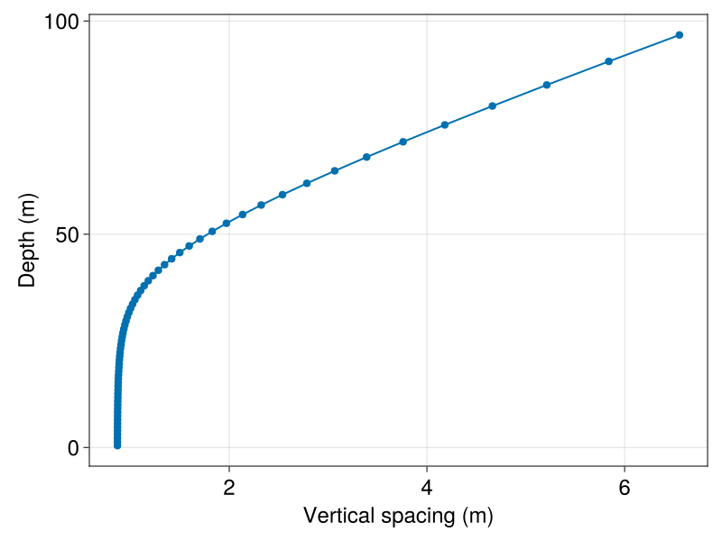
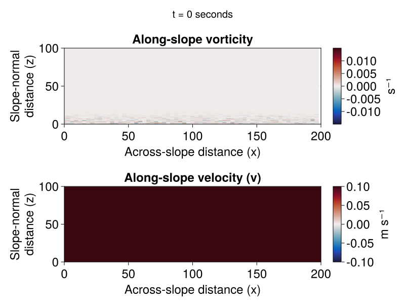

Tilted bottom boundary layer example
This example simulates a two-dimensional oceanic bottom boundary layer in a domain that's tilted with respect to gravity. We simulate the perturbation away from a constant along-slope (y-direction) velocity constant density stratification. This perturbation develops into a turbulent bottom boundary layer due to momentum loss at the bottom boundary modeled with a quadratic drag law.
This example illustrates
- changing the direction of gravitational acceleration in the buoyancy model;
- changing the axis of rotation for Coriolis forces.
Install dependencies
First let's make sure we have all required packages installed.
using Pkg
pkg"add Oceananigans, NCDatasets, CairoMakie"The domain
We create a grid with finer resolution near the bottom,
using Oceananigans
using Oceananigans.Units
Lx = 200meters
Lz = 100meters
Nx = 64
Nz = 64
# Creates a grid with near-constant spacing `refinement * Lz / Nz`
# near the bottom:
refinement = 1.8 # controls spacing near surface (higher means finer spaced)
stretching = 10 # controls rate of stretching at bottom
# "Warped" height coordinate
h(k) = (Nz + 1 - k) / Nz
# Linear near-surface generator
ζ(k) = 1 + (h(k) - 1) / refinement
# Bottom-intensified stretching function
Σ(k) = (1 - exp(-stretching * h(k))) / (1 - exp(-stretching))
# Generating function
z_faces(k) = - Lz * (ζ(k) * Σ(k) - 1)
grid = RectilinearGrid(topology = (Periodic, Flat, Bounded),
size = (Nx, Nz),
x = (0, Lx),
z = z_faces,
halo = (3, 3))64×1×64 RectilinearGrid{Float64, Periodic, Flat, Bounded} on CPU with 3×0×3 halo
├── Periodic x ∈ [0.0, 200.0) regularly spaced with Δx=3.125
├── Flat y
└── Bounded z ∈ [-0.0, 100.0] variably spaced with min(Δz)=0.868817, max(Δz)=6.55496Let's make sure the grid spacing is both finer and near-uniform at the bottom,
using CairoMakie
lines(zspacings(grid, Center()), znodes(grid, Center()),
axis = (ylabel = "Depth (m)",
xlabel = "Vertical spacing (m)"))
scatter!(zspacings(grid, Center()), znodes(grid, Center()))
current_figure() # hide
Tilting the domain
We use a domain that's tilted with respect to gravity by
θ = 3 # degrees3so that $x$ is the along-slope direction, $z$ is the across-sloce direction that is perpendicular to the bottom, and the unit vector anti-aligned with gravity is
ĝ = [sind(θ), 0, cosd(θ)]3-element Vector{Float64}:
0.052335956242943835
0.0
0.9986295347545738Changing the vertical direction impacts both the gravity_unit_vector for Buoyancy as well as the rotation_axis for Coriolis forces,
buoyancy = Buoyancy(model = BuoyancyTracer(), gravity_unit_vector = -ĝ)
coriolis = ConstantCartesianCoriolis(f = 1e-4, rotation_axis = ĝ)ConstantCartesianCoriolis{Float64}: fx = 5.23e-06, fy = 0.00e+00, fz = 9.99e-05where we have used a constant Coriolis parameter $f = 10⁻⁴ \rm{s}⁻¹$. The tilting also affects the kind of density stratified flows we can model. In particular, a constant density stratification in the tilted coordinate system
@inline constant_stratification(x, y, z, t, p) = p.N² * (x * p.ĝ[1] + z * p.ĝ[3])constant_stratification (generic function with 1 method)is not periodic in $x$. Thus we cannot explicitly model a constant stratification on an $x$-periodic grid such as the one used here. Instead, we simulate periodic perturbations away from the constant density stratification by imposing a constant stratification as a BackgroundField,
B_field = BackgroundField(constant_stratification, parameters=(; ĝ, N² = 1e-5))BackgroundField{typeof(Main.var"##359".constant_stratification), NamedTuple{(:ĝ, :N²), Tuple{Vector{Float64}, Float64}}}
├── func: constant_stratification (generic function with 1 method)
└── parameters: (ĝ = [0.052335956242943835, 0.0, 0.9986295347545738], N² = 1.0e-5)where $N² = 10⁻⁵ \rm{s}⁻¹$ is the background buoyancy gradient.
Bottom drag
We impose bottom drag that follows Monin-Obukhov theory. We include the background flow in the drag calculation, which is the only effect the background flow enters the problem,
V∞ = 0.1 # m s⁻¹
z₀ = 0.1 # m (roughness length)
κ = 0.4 # von Karman constant
z₁ = znodes(grid, Center())[1] # Closest grid center to the bottom
cᴰ = (κ / log(z₁ / z₀))^2 # Drag coefficient
@inline drag_u(x, y, t, u, v, p) = - p.cᴰ * √(u^2 + (v + p.V∞)^2) * u
@inline drag_v(x, y, t, u, v, p) = - p.cᴰ * √(u^2 + (v + p.V∞)^2) * (v + p.V∞)
drag_bc_u = FluxBoundaryCondition(drag_u, field_dependencies=(:u, :v), parameters=(; cᴰ, V∞))
drag_bc_v = FluxBoundaryCondition(drag_v, field_dependencies=(:u, :v), parameters=(; cᴰ, V∞))
u_bcs = FieldBoundaryConditions(bottom = drag_bc_u)
v_bcs = FieldBoundaryConditions(bottom = drag_bc_v)Oceananigans.FieldBoundaryConditions, with boundary conditions
├── west: DefaultBoundaryCondition (FluxBoundaryCondition: Nothing)
├── east: DefaultBoundaryCondition (FluxBoundaryCondition: Nothing)
├── south: DefaultBoundaryCondition (FluxBoundaryCondition: Nothing)
├── north: DefaultBoundaryCondition (FluxBoundaryCondition: Nothing)
├── bottom: FluxBoundaryCondition: ContinuousBoundaryFunction drag_v at (Nothing, Nothing, Nothing)
├── top: DefaultBoundaryCondition (FluxBoundaryCondition: Nothing)
└── immersed: DefaultBoundaryCondition (FluxBoundaryCondition: Nothing)Create the NonhydrostaticModel
We are now ready to create the model. We create a NonhydrostaticModel with an UpwindBiasedFifthOrder advection scheme, a RungeKutta3 timestepper, and a constant viscosity and diffusivity. Here we use a smallish value of $10^{-4} m² s⁻¹$.
closure = ScalarDiffusivity(ν=1e-4, κ=1e-4)
model = NonhydrostaticModel(; grid, buoyancy, coriolis, closure,
timestepper = :RungeKutta3,
advection = UpwindBiasedFifthOrder(),
tracers = :b,
boundary_conditions = (u=u_bcs, v=v_bcs),
background_fields = (; b=B_field))NonhydrostaticModel{CPU, RectilinearGrid}(time = 0 seconds, iteration = 0)
├── grid: 64×1×64 RectilinearGrid{Float64, Periodic, Flat, Bounded} on CPU with 3×0×3 halo
├── timestepper: RungeKutta3TimeStepper
├── tracers: b
├── closure: ScalarDiffusivity{ExplicitTimeDiscretization}(ν=0.0001, κ=(b=0.0001,))
├── buoyancy: BuoyancyTracer with ĝ = Tuple{Float64, Float64, Float64}
└── coriolis: ConstantCartesianCoriolis{Float64}Let's introduce a bit of random noise in the bottom of the domain to speed up the onset of turbulence:
noise(x, y, z) = 1e-3 * randn() * exp(-(10z)^2/grid.Lz^2)
set!(model, u=noise, w=noise)Create and run a simulation
We are now ready to create the simulation. We begin by setting the initial time step conservatively, based on the smallest grid size of our domain and set-up a
using Oceananigans.Units
simulation = Simulation(model, Δt = 0.5 * minimum_zspacing(grid) / V∞, stop_time = 1days)Simulation of NonhydrostaticModel{CPU, RectilinearGrid}(time = 0 seconds, iteration = 0)
├── Next time step: 4.344 seconds
├── Elapsed wall time: 0 seconds
├── Wall time per iteration: NaN days
├── Stop time: 1 day
├── Stop iteration : Inf
├── Wall time limit: Inf
├── Callbacks: OrderedDict with 4 entries:
│ ├── stop_time_exceeded => Callback of stop_time_exceeded on IterationInterval(1)
│ ├── stop_iteration_exceeded => Callback of stop_iteration_exceeded on IterationInterval(1)
│ ├── wall_time_limit_exceeded => Callback of wall_time_limit_exceeded on IterationInterval(1)
│ └── nan_checker => Callback of NaNChecker for u on IterationInterval(100)
├── Output writers: OrderedDict with no entries
└── Diagnostics: OrderedDict with no entriesWe use TimeStepWizard to adapt our time-step and print a progress message,
using Printf
wizard = TimeStepWizard(max_change=1.1, cfl=0.7)
simulation.callbacks[:wizard] = Callback(wizard, IterationInterval(4))
start_time = time_ns() # so we can print the total elapsed wall time
progress_message(sim) =
@printf("Iteration: %04d, time: %s, Δt: %s, max|w|: %.1e m s⁻¹, wall time: %s\n",
iteration(sim), prettytime(time(sim)),
prettytime(sim.Δt), maximum(abs, sim.model.velocities.w),
prettytime((time_ns() - start_time) * 1e-9))
simulation.callbacks[:progress] = Callback(progress_message, IterationInterval(200))Callback of progress_message on IterationInterval(200)Add outputs to the simulation
We add outputs to our model using the NetCDFOutputWriter,
u, v, w = model.velocities
b = model.tracers.b
B∞ = model.background_fields.tracers.b
B = b + B∞
V = v + V∞
ωy = ∂z(u) - ∂x(w)
outputs = (; u, V, w, B, ωy)
simulation.output_writers[:fields] = NetCDFOutputWriter(model, outputs;
filename = joinpath(@__DIR__, "tilted_bottom_boundary_layer.nc"),
schedule = TimeInterval(20minutes),
overwrite_existing = true)NetCDFOutputWriter scheduled on TimeInterval(20 minutes):
├── filepath: /var/lib/buildkite-agent/builds/tartarus-16/clima/oceananigans/docs/src/generated/tilted_bottom_boundary_layer.nc
├── dimensions: zC(64), zF(65), xC(64), yF(1), xF(64), yC(1), time(0)
├── 5 outputs: (B, w, ωy, V, u)
└── array type: Array{Float64}Now we just run it!
run!(simulation)[ Info: Initializing simulation...
Iteration: 0000, time: 0 seconds, Δt: 4.778 seconds, max|w|: 1.4e-03 m s⁻¹, wall time: 16.948 seconds
[ Info: ... simulation initialization complete (5.447 seconds)
[ Info: Executing initial time step...
[ Info: ... initial time step complete (15.750 seconds).
Iteration: 0200, time: 26.884 minutes, Δt: 7.723 seconds, max|w|: 3.4e-04 m s⁻¹, wall time: 38.136 seconds
Iteration: 0400, time: 52.192 minutes, Δt: 7.522 seconds, max|w|: 3.9e-04 m s⁻¹, wall time: 40.953 seconds
Iteration: 0600, time: 1.284 hours, Δt: 7.448 seconds, max|w|: 2.4e-04 m s⁻¹, wall time: 43.791 seconds
Iteration: 0800, time: 1.695 hours, Δt: 7.392 seconds, max|w|: 2.6e-04 m s⁻¹, wall time: 46.588 seconds
Iteration: 1000, time: 2.104 hours, Δt: 7.360 seconds, max|w|: 2.1e-04 m s⁻¹, wall time: 49.395 seconds
Iteration: 1200, time: 2.511 hours, Δt: 7.342 seconds, max|w|: 2.7e-04 m s⁻¹, wall time: 52.218 seconds
Iteration: 1400, time: 2.917 hours, Δt: 7.320 seconds, max|w|: 5.9e-04 m s⁻¹, wall time: 55.050 seconds
Iteration: 1600, time: 3.323 hours, Δt: 7.311 seconds, max|w|: 1.8e-03 m s⁻¹, wall time: 57.848 seconds
Iteration: 1800, time: 3.721 hours, Δt: 7.315 seconds, max|w|: 5.0e-03 m s⁻¹, wall time: 1.012 minutes
Iteration: 2000, time: 4.133 hours, Δt: 7.506 seconds, max|w|: 5.6e-03 m s⁻¹, wall time: 1.059 minutes
Iteration: 2200, time: 4.550 hours, Δt: 7.476 seconds, max|w|: 4.8e-03 m s⁻¹, wall time: 1.106 minutes
Iteration: 2400, time: 4.963 hours, Δt: 7.469 seconds, max|w|: 4.4e-03 m s⁻¹, wall time: 1.152 minutes
Iteration: 2600, time: 5.372 hours, Δt: 7.305 seconds, max|w|: 4.3e-03 m s⁻¹, wall time: 1.200 minutes
Iteration: 2800, time: 5.774 hours, Δt: 7.293 seconds, max|w|: 3.7e-03 m s⁻¹, wall time: 1.247 minutes
Iteration: 3000, time: 6.177 hours, Δt: 7.252 seconds, max|w|: 4.3e-03 m s⁻¹, wall time: 1.293 minutes
Iteration: 3200, time: 6.579 hours, Δt: 7.248 seconds, max|w|: 4.2e-03 m s⁻¹, wall time: 1.341 minutes
Iteration: 3400, time: 6.981 hours, Δt: 7.274 seconds, max|w|: 3.2e-03 m s⁻¹, wall time: 1.388 minutes
Iteration: 3600, time: 7.382 hours, Δt: 7.238 seconds, max|w|: 3.2e-03 m s⁻¹, wall time: 1.434 minutes
Iteration: 3800, time: 7.784 hours, Δt: 7.274 seconds, max|w|: 3.9e-03 m s⁻¹, wall time: 1.481 minutes
Iteration: 4000, time: 8.186 hours, Δt: 7.292 seconds, max|w|: 3.8e-03 m s⁻¹, wall time: 1.528 minutes
Iteration: 4200, time: 8.590 hours, Δt: 7.288 seconds, max|w|: 6.1e-03 m s⁻¹, wall time: 1.575 minutes
Iteration: 4400, time: 8.994 hours, Δt: 7.272 seconds, max|w|: 5.6e-03 m s⁻¹, wall time: 1.622 minutes
Iteration: 4600, time: 9.401 hours, Δt: 7.348 seconds, max|w|: 5.4e-03 m s⁻¹, wall time: 1.669 minutes
Iteration: 4800, time: 9.807 hours, Δt: 7.342 seconds, max|w|: 6.6e-03 m s⁻¹, wall time: 1.716 minutes
Iteration: 5000, time: 10.213 hours, Δt: 7.303 seconds, max|w|: 6.1e-03 m s⁻¹, wall time: 1.763 minutes
Iteration: 5200, time: 10.620 hours, Δt: 7.408 seconds, max|w|: 5.4e-03 m s⁻¹, wall time: 1.810 minutes
Iteration: 5400, time: 11.027 hours, Δt: 7.338 seconds, max|w|: 4.5e-03 m s⁻¹, wall time: 1.858 minutes
Iteration: 5600, time: 11.430 hours, Δt: 7.273 seconds, max|w|: 4.7e-03 m s⁻¹, wall time: 1.905 minutes
Iteration: 5800, time: 11.833 hours, Δt: 7.308 seconds, max|w|: 4.3e-03 m s⁻¹, wall time: 1.952 minutes
Iteration: 6000, time: 12.235 hours, Δt: 7.191 seconds, max|w|: 5.3e-03 m s⁻¹, wall time: 1.998 minutes
Iteration: 6200, time: 12.635 hours, Δt: 7.186 seconds, max|w|: 5.3e-03 m s⁻¹, wall time: 2.045 minutes
Iteration: 6400, time: 13.028 hours, Δt: 7.180 seconds, max|w|: 3.9e-03 m s⁻¹, wall time: 2.092 minutes
Iteration: 6600, time: 13.428 hours, Δt: 7.242 seconds, max|w|: 4.2e-03 m s⁻¹, wall time: 2.139 minutes
Iteration: 6800, time: 13.829 hours, Δt: 7.221 seconds, max|w|: 5.5e-03 m s⁻¹, wall time: 2.187 minutes
Iteration: 7000, time: 14.227 hours, Δt: 7.253 seconds, max|w|: 4.3e-03 m s⁻¹, wall time: 2.233 minutes
Iteration: 7200, time: 14.628 hours, Δt: 7.227 seconds, max|w|: 6.1e-03 m s⁻¹, wall time: 2.280 minutes
Iteration: 7400, time: 15.028 hours, Δt: 7.205 seconds, max|w|: 5.1e-03 m s⁻¹, wall time: 2.327 minutes
Iteration: 7600, time: 15.427 hours, Δt: 7.266 seconds, max|w|: 5.6e-03 m s⁻¹, wall time: 2.374 minutes
Iteration: 7800, time: 15.831 hours, Δt: 7.285 seconds, max|w|: 4.9e-03 m s⁻¹, wall time: 2.421 minutes
Iteration: 8000, time: 16.229 hours, Δt: 7.292 seconds, max|w|: 5.3e-03 m s⁻¹, wall time: 2.468 minutes
Iteration: 8200, time: 16.632 hours, Δt: 7.308 seconds, max|w|: 6.6e-03 m s⁻¹, wall time: 2.515 minutes
Iteration: 8400, time: 17.036 hours, Δt: 7.293 seconds, max|w|: 5.4e-03 m s⁻¹, wall time: 2.562 minutes
Iteration: 8600, time: 17.438 hours, Δt: 7.242 seconds, max|w|: 4.6e-03 m s⁻¹, wall time: 2.609 minutes
Iteration: 8800, time: 17.838 hours, Δt: 7.288 seconds, max|w|: 5.3e-03 m s⁻¹, wall time: 2.656 minutes
Iteration: 9000, time: 18.238 hours, Δt: 7.137 seconds, max|w|: 4.9e-03 m s⁻¹, wall time: 2.703 minutes
Iteration: 9200, time: 18.634 hours, Δt: 7.226 seconds, max|w|: 5.1e-03 m s⁻¹, wall time: 2.750 minutes
Iteration: 9400, time: 19.030 hours, Δt: 7.194 seconds, max|w|: 6.1e-03 m s⁻¹, wall time: 2.796 minutes
Iteration: 9600, time: 19.427 hours, Δt: 7.182 seconds, max|w|: 6.8e-03 m s⁻¹, wall time: 2.843 minutes
Iteration: 9800, time: 19.825 hours, Δt: 7.206 seconds, max|w|: 6.4e-03 m s⁻¹, wall time: 2.889 minutes
Iteration: 10000, time: 20.223 hours, Δt: 7.183 seconds, max|w|: 8.2e-03 m s⁻¹, wall time: 2.936 minutes
Iteration: 10200, time: 20.620 hours, Δt: 7.185 seconds, max|w|: 6.0e-03 m s⁻¹, wall time: 2.983 minutes
Iteration: 10400, time: 21.014 hours, Δt: 7.133 seconds, max|w|: 6.7e-03 m s⁻¹, wall time: 3.031 minutes
Iteration: 10600, time: 21.411 hours, Δt: 7.192 seconds, max|w|: 6.2e-03 m s⁻¹, wall time: 3.079 minutes
Iteration: 10800, time: 21.811 hours, Δt: 7.240 seconds, max|w|: 7.0e-03 m s⁻¹, wall time: 3.126 minutes
Iteration: 11000, time: 22.213 hours, Δt: 7.208 seconds, max|w|: 4.4e-03 m s⁻¹, wall time: 3.173 minutes
Iteration: 11200, time: 22.612 hours, Δt: 7.226 seconds, max|w|: 5.6e-03 m s⁻¹, wall time: 3.221 minutes
Iteration: 11400, time: 23.010 hours, Δt: 7.233 seconds, max|w|: 7.6e-03 m s⁻¹, wall time: 3.268 minutes
Iteration: 11600, time: 23.410 hours, Δt: 7.242 seconds, max|w|: 6.5e-03 m s⁻¹, wall time: 3.316 minutes
Iteration: 11800, time: 23.812 hours, Δt: 7.226 seconds, max|w|: 6.4e-03 m s⁻¹, wall time: 3.363 minutes
[ Info: Simulation is stopping after running for 3.150 minutes.
[ Info: Simulation time 1 day equals or exceeds stop time 1 day.
Visualize the results
First we load the required package to load NetCDF output files and define the coordinates for plotting using existing objects:
using NCDatasets, CairoMakie
xω, yω, zω = nodes(ωy)
xv, yv, zv = nodes(V)([1.5625, 4.6875, 7.8125, 10.9375, 14.0625, 17.1875, 20.3125, 23.4375, 26.5625, 29.6875, 32.8125, 35.9375, 39.0625, 42.1875, 45.3125, 48.4375, 51.5625, 54.6875, 57.8125, 60.9375, 64.0625, 67.1875, 70.3125, 73.4375, 76.5625, 79.6875, 82.8125, 85.9375, 89.0625, 92.1875, 95.3125, 98.4375, 101.5625, 104.6875, 107.8125, 110.9375, 114.0625, 117.1875, 120.3125, 123.4375, 126.5625, 129.6875, 132.8125, 135.9375, 139.0625, 142.1875, 145.3125, 148.4375, 151.5625, 154.6875, 157.8125, 160.9375, 164.0625, 167.1875, 170.3125, 173.4375, 176.5625, 179.6875, 182.8125, 185.9375, 189.0625, 192.1875, 195.3125, 198.4375], StepRangeLen(1.0, 0.0, 1), [0.4344083608847693, 1.303282217470314, 2.1722793473188617, 3.041419168936904, 3.9107241431416084, 4.780220246692868, 5.649937519111903, 6.519910693894487, 7.390179927024476, 8.26079163764491, 9.131799477986252, 10.00326545222724, 10.875261206921866, 11.747869519021842, 12.621186011421164, 13.495321130420056, 14.370402424632783, 15.24657717074116, 16.124015398230675, 17.00291337296054, 17.88349760825156, 18.766029482284154, 19.650810552161538, 20.538188668213625, 21.428565007224726, 22.322402160523495, 23.22023343257072, 24.122673528152244, 25.030430831905008, 25.944321513097137, 26.865285721823064, 27.794406180595843, 28.732929518320184, 29.682290742481506, 30.64414130083751, 31.62038124678409, 32.61319609381579, 33.62509902514256, 34.65897921569778, 35.71815712673464, 36.80644774933731, 37.92823290397964, 39.08854385039015, 40.29315562720595, 41.548694726134066, 42.86276191262984, 44.24407223660885, 45.702614534695954, 47.24983301231516, 48.89883381190526, 50.66461982505285, 52.56435739360966, 54.61767896995204, 56.84702627115933, 59.27803896724765, 61.93999449018695, 64.86630513774502, 68.09507927238374, 71.66975407682737, 75.63980801853194, 80.06156188607441, 84.99907797852119, 90.52516773625328, 96.72251877439135])Read in the simulation's output_writer for the two-dimensional fields and then create an animation showing the $y$-component of vorticity.
ds = NCDataset(simulation.output_writers[:fields].filepath, "r")
fig = Figure(resolution = (800, 600))
axis_kwargs = (xlabel = "Across-slope distance (x)",
ylabel = "Slope-normal\ndistance (z)",
limits = ((0, Lx), (0, Lz)),
)
ax_ω = Axis(fig[2, 1]; title = "Along-slope vorticity", axis_kwargs...)
ax_v = Axis(fig[3, 1]; title = "Along-slope velocity (v)", axis_kwargs...)
n = Observable(1)
ωy = @lift ds["ωy"][:, 1, :, $n]
hm_ω = heatmap!(ax_ω, xω, zω, ωy, colorrange = (-0.015, +0.015), colormap = :balance)
Colorbar(fig[2, 2], hm_ω; label = "s⁻¹")
V = @lift ds["V"][:, 1, :, $n]
V_max = @lift maximum(abs, ds["V"][:, 1, :, $n])
hm_v = heatmap!(ax_v, xv, zv, V, colorrange = (-V∞, +V∞), colormap = :balance)
Colorbar(fig[3, 2], hm_v; label = "m s⁻¹")
times = collect(ds["time"])
title = @lift "t = " * string(prettytime(times[$n]))
fig[1, :] = Label(fig, title, fontsize=20, tellwidth=false)
current_figure() # hide
fig
Finally, we record a movie.
frames = 1:length(times)
record(fig, "tilted_bottom_boundary_layer.mp4", frames, framerate=12) do i
n[] = i
endDon't forget to close the NetCDF file!
close(ds)closed DatasetThis page was generated using Literate.jl.